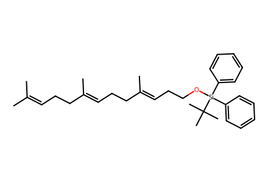
CC(C)=CCC/C(C)=C/CC/C(C)=C/CCO[Si](c1ccccc1)(c1ccccc1)C(C)(C)C51 molecular records, 27 preparation events, 29 operation records, 14 paths. Mixture and multistep yields retain source scope. Independent review pending.
完整 JSON · 逐步 CSV · 路线序列 · SDF · HRMS 核对
| 事件 | 分子连接 | 报告产率 | Canonical reaction SMILES |
|---|---|---|---|
| E01 | farnesol → farnesal | farnesal: 96% | CC(C)=CCC/C(C)=C/CC/C(C)=C/CO>>CC(C)=CCC/C(C)=C/CC/C(C)=C/C=O |
| E02 | farnesal + methylphosphonium-bromide → tetraene | tetraene: 96% | CC(C)=CCC/C(C)=C/CC/C(C)=C/C=O.C[P+](c1ccccc1)(c1ccccc1)c1ccccc1.[Br-]>>C=C/C=C(\C)CC/C=C(\C)CCC=C(C)C |
| E03 | tetraene → 11 | 11: 89% | C=C/C=C(\C)CC/C=C(\C)CCC=C(C)C>>CC(C)=CCC/C(C)=C/CC/C(C)=C/CCO |
| E04 | 11 + TBDPSCl → 12 | 12: 99% | CC(C)(C)[Si](Cl)(c1ccccc1)c1ccccc1.CC(C)=CCC/C(C)=C/CC/C(C)=C/CCO>>CC(C)=CCC/C(C)=C/CC/C(C)=C/CCO[Si](c1ccccc1)(c1ccccc1)C(C)(C)C |
| E05 | 12 → 13 | 13: 69% | CC(C)=CCC/C(C)=C/CC/C(C)=C/CCO[Si](c1ccccc1)(c1ccccc1)C(C)(C)C>>C/C(=C\CCO[Si](c1ccccc1)(c1ccccc1)C(C)(C)C)CC/C=C(\C)CCC1OC1(C)C |
| E06 | 13 → 14 | 14: 97% | C/C(=C\CCO[Si](c1ccccc1)(c1ccccc1)C(C)(C)C)CC/C=C(\C)CCC1OC1(C)C>>C/C(=C\CC/C(C)=C/CCO[Si](c1ccccc1)(c1ccccc1)C(C)(C)C)CCC=O |
| E07 | oxazolidinone + phosphonoacetic-acid → 15 | 15: 96% | CCOP(=O)(CC(=O)O)OCC.O=C1N[C@H](c2ccccc2)CO1>>CCOP(=O)(CC(=O)N1C(=O)OC[C@H]1c1ccccc1)OCC |
| E08 | 14 + 15 → 16 | 16: 69% | C/C(=C\CC/C(C)=C/CCO[Si](c1ccccc1)(c1ccccc1)C(C)(C)C)CCC=O.CCOP(=O)(CC(=O)N1C(=O)OC[C@H]1c1ccccc1)OCC>>C/C(=C\CCO[Si](c1ccccc1)(c1ccccc1)C(C)(C)C)CC/C=C(\C)CC/C=C/C(=O)N1C(=O)OC[C@H]1c1ccccc1 |
| E09 | 16 + isopropenyl-MgBr → 17 | 17: 95% | C/C(=C\CCO[Si](c1ccccc1)(c1ccccc1)C(C)(C)C)CC/C=C(\C)CC/C=C/C(=O)N1C(=O)OC[C@H]1c1ccccc1.C=[C-]C.[Br-].[Mg+2]>>C=C(C)[C@@H](CC/C(C)=C/CC/C(C)=C/CCO[Si](c1ccccc1)(c1ccccc1)C(C)(C)C)CC(=O)N1C(=O)OC[C@H]1c1ccccc1 |
| E10 | 17 → SI-1 | SI-1: 75% | C=C(C)[C@@H](CC/C(C)=C/CC/C(C)=C/CCO[Si](c1ccccc1)(c1ccccc1)C(C)(C)C)CC(=O)N1C(=O)OC[C@H]1c1ccccc1>>C=C(C)[C@H](CCO)CC/C(C)=C/CC/C(C)=C/CCO[Si](c1ccccc1)(c1ccccc1)C(C)(C)C |
| E11 | SI-1 + MOMBr → 18 | 18: 92% | C=C(C)[C@H](CCO)CC/C(C)=C/CC/C(C)=C/CCO[Si](c1ccccc1)(c1ccccc1)C(C)(C)C.COCBr>>C=C(C)[C@H](CCOCOC)CC/C(C)=C/CC/C(C)=C/CCO[Si](c1ccccc1)(c1ccccc1)C(C)(C)C |
| E12 | 18 → SI-2 | SI-2: 88% | C=C(C)[C@H](CCOCOC)CC/C(C)=C/CC/C(C)=C/CCO[Si](c1ccccc1)(c1ccccc1)C(C)(C)C>>C=C(C)[C@H](CCOCOC)CC/C(C)=C/CC/C(C)=C/CCO |
| E13 | SI-2 → 19 | 19: 98% | C=C(C)[C@H](CCOCOC)CC/C(C)=C/CC/C(C)=C/CCO>>C=C(C)[C@H](CCOCOC)CC/C(C)=C/CC/C(C)=C/CCI |
| E14 | 19 + 20 → 21 | 21: 94% | C=C(C)[C@H](CCOCOC)CC/C(C)=C/CC/C(C)=C/CCI.CCOC(=O)CP(=O)(OCC)OCC>>C=C(C)[C@H](CCOCOC)CC/C(C)=C/CC/C(C)=C/CCC(C(=O)OCC)P(=O)(OCC)OCC |
| E15 | 21 → 22 | 22: 64% | C=C(C)[C@H](CCOCOC)CC/C(C)=C/CC/C(C)=C/CCC(C(=O)OCC)P(=O)(OCC)OCC>>CCOC(=O)C(CC/C=C(\C)CC/C=C(\C)CC[C@H]1CCOC1(C)C)P(=O)(OCC)OCC |
| E16 | 21 → 10 + 23 | 10: 69%; 23: 29% | C=C(C)[C@H](CCOCOC)CC/C(C)=C/CC/C(C)=C/CCC(C(=O)OCC)P(=O)(OCC)OCC>>C=C(C)[C@H](CCO)CC/C(C)=C/CC/C(C)=C/CCC(C(=O)OCC)P(=O)(OCC)OCC.C=C(C)[C@H](CCOCOCC[C@H](CC/C(C)=C/CC/C(C)=C/CCC(C(=O)OCC)P(=O)(OCC)OCC)C(=C)C)CC/C(C)=C/CC/C(C)=C/CCC(C(=O)OCC)P(=O)(OCC)OCC |
| E17 | 23 → 10 | 10: 76% | C=C(C)[C@H](CCOCOCC[C@H](CC/C(C)=C/CC/C(C)=C/CCC(C(=O)OCC)P(=O)(OCC)OCC)C(=C)C)CC/C(C)=C/CC/C(C)=C/CCC(C(=O)OCC)P(=O)(OCC)OCC>>C=C(C)[C@H](CCO)CC/C(C)=C/CC/C(C)=C/CCC(C(=O)OCC)P(=O)(OCC)OCC |
| E18 | 17 → SI-3 | SI-3: 89% | C=C(C)[C@@H](CC/C(C)=C/CC/C(C)=C/CCO[Si](c1ccccc1)(c1ccccc1)C(C)(C)C)CC(=O)N1C(=O)OC[C@H]1c1ccccc1>>C=C(C)[C@@H](CC/C(C)=C/CC/C(C)=C/CCO)CC(=O)N1C(=O)OC[C@H]1c1ccccc1 |
| E19 | SI-3 → SI-4 | SI-4: 89% | C=C(C)[C@@H](CC/C(C)=C/CC/C(C)=C/CCO)CC(=O)N1C(=O)OC[C@H]1c1ccccc1>>C=C(C)[C@@H](CC/C(C)=C/CC/C(C)=C/CCI)CC(=O)N1C(=O)OC[C@H]1c1ccccc1 |
| E20 | SI-4 + 20 → 24 | 24: 66% | C=C(C)[C@@H](CC/C(C)=C/CC/C(C)=C/CCI)CC(=O)N1C(=O)OC[C@H]1c1ccccc1.CCOC(=O)CP(=O)(OCC)OCC>>C=C(C)[C@@H](CC/C(C)=C/CC/C(C)=C/CCC(C(=O)OCC)P(=O)(OCC)OCC)CC(=O)N1C(=O)OC[C@H]1c1ccccc1 |
| E21 | 24 → 10 | 10: 55% | C=C(C)[C@@H](CC/C(C)=C/CC/C(C)=C/CCC(C(=O)OCC)P(=O)(OCC)OCC)CC(=O)N1C(=O)OC[C@H]1c1ccccc1>>C=C(C)[C@H](CCO)CC/C(C)=C/CC/C(C)=C/CCC(C(=O)OCC)P(=O)(OCC)OCC |
| E22 | 10 → 9-A + 9-B + 9-C | not reported | C=C(C)[C@H](CCO)CC/C(C)=C/CC/C(C)=C/CCC(C(=O)OCC)P(=O)(OCC)OCC>>C=C(C)[C@H](CCO)CC/C(C)=C/CC[C@@]1(C)O[C@@H]1CCC(C(=O)OCC)P(=O)(OCC)OCC.C=C(C)[C@H](CCO)CC[C@@]1(C)O[C@@H]1CC/C(C)=C/CCC(C(=O)OCC)P(=O)(OCC)OCC.C=C(C)[C@H](CCO)CC[C@]1(C)O[C@H]1CC/C(C)=C/CCC(C(=O)OCC)P(=O)(OCC)OCC |
| E23 | 9-A + 9-B + 9-C → SI-5-A + SI-5-B + SI-5-C | not reported | C=C(C)[C@H](CCO)CC/C(C)=C/CC[C@@]1(C)O[C@@H]1CCC(C(=O)OCC)P(=O)(OCC)OCC.C=C(C)[C@H](CCO)CC[C@@]1(C)O[C@@H]1CC/C(C)=C/CCC(C(=O)OCC)P(=O)(OCC)OCC.C=C(C)[C@H](CCO)CC[C@]1(C)O[C@H]1CC/C(C)=C/CCC(C(=O)OCC)P(=O)(OCC)OCC>>C=C(C)[C@H](CC=O)CC/C(C)=C/CC[C@@]1(C)O[C@@H]1CCC(C(=O)OCC)P(=O)(OCC)OCC.C=C(C)[C@H](CC=O)CC[C@@]1(C)O[C@@H]1CC/C(C)=C/CCC(C(=O)OCC)P(=O)(OCC)OCC.C=C(C)[C@H](CC=O)CC[C@]1(C)O[C@H]1CC/C(C)=C/CCC(C(=O)OCC)P(=O)(OCC)OCC |
| E24 | SI-5-A + SI-5-B + SI-5-C + methylphosphonium-bromide + formaldehyde → SI-6-A + SI-6-B + SI-6-C | not reported | C=C(C)[C@H](CC=O)CC/C(C)=C/CC[C@@]1(C)O[C@@H]1CCC(C(=O)OCC)P(=O)(OCC)OCC.C=C(C)[C@H](CC=O)CC[C@@]1(C)O[C@@H]1CC/C(C)=C/CCC(C(=O)OCC)P(=O)(OCC)OCC.C=C(C)[C@H](CC=O)CC[C@]1(C)O[C@H]1CC/C(C)=C/CCC(C(=O)OCC)P(=O)(OCC)OCC.C=O.C[P+](c1ccccc1)(c1ccccc1)c1ccccc1.[Br-]>>C=CC[C@H](CC/C(C)=C/CC[C@@]1(C)O[C@@H]1CCC(=C)C(=O)OCC)C(=C)C.C=CC[C@H](CC[C@@]1(C)O[C@@H]1CC/C(C)=C/CCC(=C)C(=O)OCC)C(=C)C.C=CC[C@H](CC[C@]1(C)O[C@H]1CC/C(C)=C/CCC(=C)C(=O)OCC)C(=C)C |
| E25 | SI-5-A + SI-5-B + SI-5-C → 1 + 25-B + 25-C + SI-7-representative | 1: 18% | C=C(C)[C@H](CC=O)CC/C(C)=C/CC[C@@]1(C)O[C@@H]1CCC(C(=O)OCC)P(=O)(OCC)OCC.C=C(C)[C@H](CC=O)CC[C@@]1(C)O[C@@H]1CC/C(C)=C/CCC(C(=O)OCC)P(=O)(OCC)OCC.C=C(C)[C@H](CC=O)CC[C@]1(C)O[C@H]1CC/C(C)=C/CCC(C(=O)OCC)P(=O)(OCC)OCC>>C=C(C)[C@@H]1CC=C(C(=O)OCC)CC[C@H]2O[C@]2(C)CC/C=C(\C)CC[C@H](C(=C)C)CC=C(C(=O)OCC)CC[C@H]2O[C@]2(C)CC/C=C(\C)CC1.C=C(C)[C@@H]1CC=C(CO)CC/C=C(\C)CC[C@@H]2O[C@@]2(C)CC1.C=C(C)[C@@H]1CC=C(CO)CC/C=C(\C)CC[C@H]2O[C@]2(C)CC1.C=C(C)[C@@H]1CC=C(CO)CC[C@H]2O[C@]2(C)CC/C=C(\C)CC1 |
| E26 | 1 + acetic-anhydride → 2 | 2: 86% | C=C(C)[C@@H]1CC=C(CO)CC[C@H]2O[C@]2(C)CC/C=C(\C)CC1.CC(=O)OC(C)=O>>C=C(C)[C@@H]1CC=C(COC(C)=O)CC[C@H]2O[C@]2(C)CC/C=C(\C)CC1 |
| E27 | 1 → 3 | 3: 62% | C=C(C)[C@@H]1CC=C(CO)CC[C@H]2O[C@]2(C)CC/C=C(\C)CC1>>C=C(C)[C@@H]1CC=C(C=O)CC[C@H]2O[C@]2(C)CC/C=C(\C)CC1 |

CC(C)=CCC/C(C)=C/CC/C(C)=C/CCO[Si](c1ccccc1)(c1ccccc1)C(C)(C)C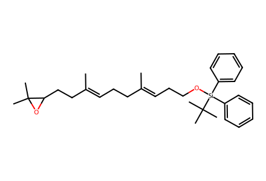
C/C(=C\CCO[Si](c1ccccc1)(c1ccccc1)C(C)(C)C)CC/C=C(\C)CCC1OC1(C)C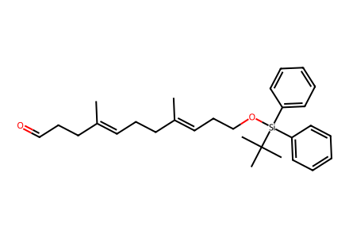
C/C(=C\CC/C(C)=C/CCO[Si](c1ccccc1)(c1ccccc1)C(C)(C)C)CCC=O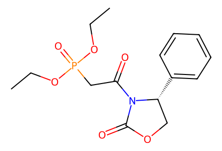
CCOP(=O)(CC(=O)N1C(=O)OC[C@H]1c1ccccc1)OCC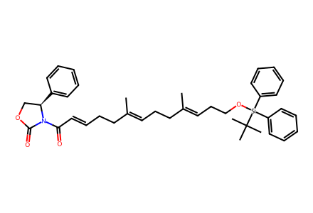
C/C(=C\CCO[Si](c1ccccc1)(c1ccccc1)C(C)(C)C)CC/C=C(\C)CC/C=C/C(=O)N1C(=O)OC[C@H]1c1ccccc1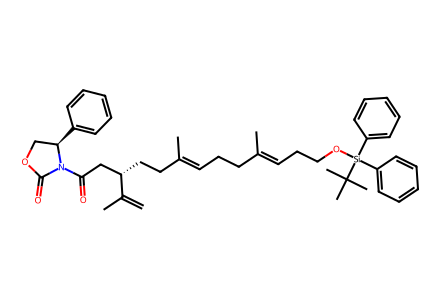
C=C(C)[C@@H](CC/C(C)=C/CC/C(C)=C/CCO[Si](c1ccccc1)(c1ccccc1)C(C)(C)C)CC(=O)N1C(=O)OC[C@H]1c1ccccc1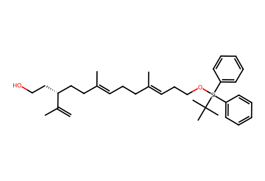
C=C(C)[C@H](CCO)CC/C(C)=C/CC/C(C)=C/CCO[Si](c1ccccc1)(c1ccccc1)C(C)(C)C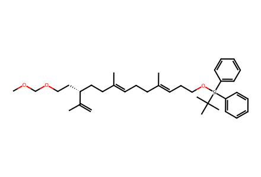
C=C(C)[C@H](CCOCOC)CC/C(C)=C/CC/C(C)=C/CCO[Si](c1ccccc1)(c1ccccc1)C(C)(C)C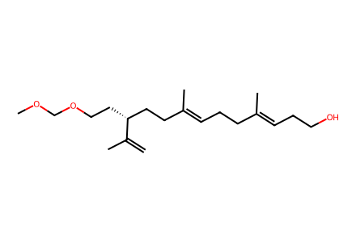
C=C(C)[C@H](CCOCOC)CC/C(C)=C/CC/C(C)=C/CCO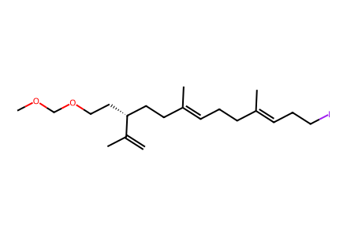
C=C(C)[C@H](CCOCOC)CC/C(C)=C/CC/C(C)=C/CCI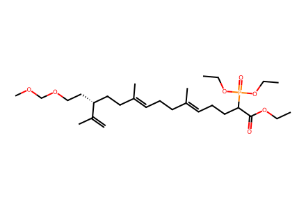
C=C(C)[C@H](CCOCOC)CC/C(C)=C/CC/C(C)=C/CCC(C(=O)OCC)P(=O)(OCC)OCC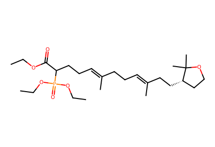
CCOC(=O)C(CC/C=C(\C)CC/C=C(\C)CC[C@H]1CCOC1(C)C)P(=O)(OCC)OCC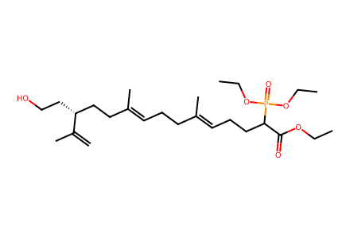
C=C(C)[C@H](CCO)CC/C(C)=C/CC/C(C)=C/CCC(C(=O)OCC)P(=O)(OCC)OCC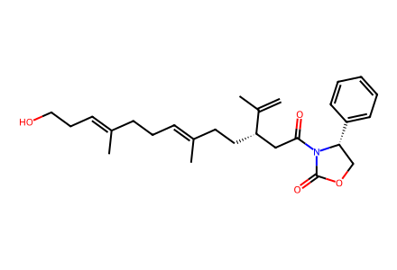
C=C(C)[C@@H](CC/C(C)=C/CC/C(C)=C/CCO)CC(=O)N1C(=O)OC[C@H]1c1ccccc1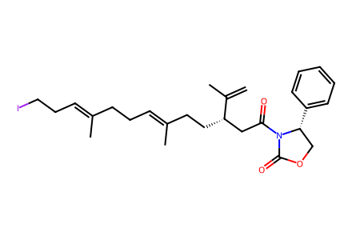
C=C(C)[C@@H](CC/C(C)=C/CC/C(C)=C/CCI)CC(=O)N1C(=O)OC[C@H]1c1ccccc1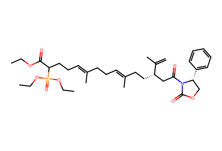
C=C(C)[C@@H](CC/C(C)=C/CC/C(C)=C/CCC(C(=O)OCC)P(=O)(OCC)OCC)CC(=O)N1C(=O)OC[C@H]1c1ccccc1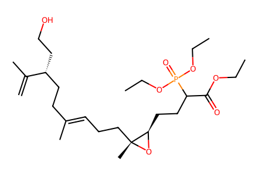
C=C(C)[C@H](CCO)CC/C(C)=C/CC[C@@]1(C)O[C@@H]1CCC(C(=O)OCC)P(=O)(OCC)OCC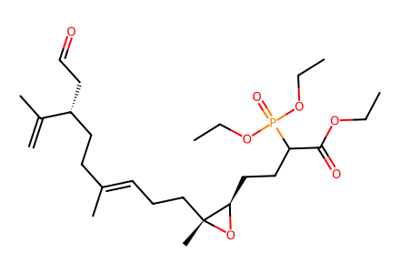
C=C(C)[C@H](CC=O)CC/C(C)=C/CC[C@@]1(C)O[C@@H]1CCC(C(=O)OCC)P(=O)(OCC)OCC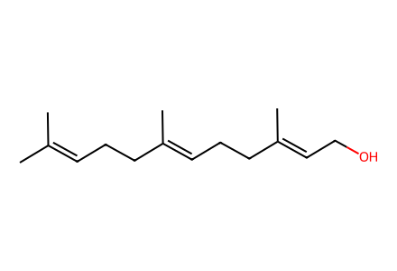
CC(C)=CCC/C(C)=C/CC/C(C)=C/CO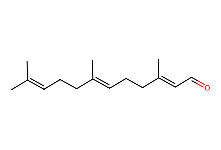
CC(C)=CCC/C(C)=C/CC/C(C)=C/C=O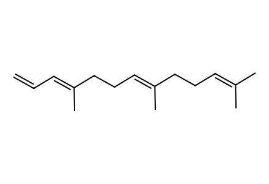
C=C/C=C(\C)CC/C=C(\C)CCC=C(C)C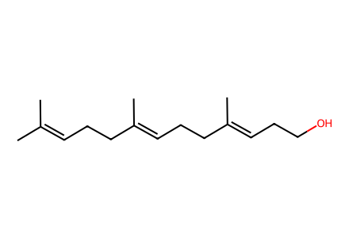
CC(C)=CCC/C(C)=C/CC/C(C)=C/CCO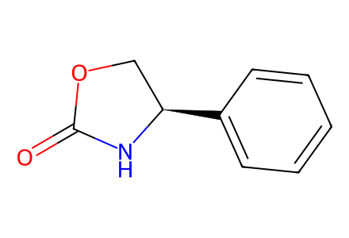
O=C1N[C@H](c2ccccc2)CO1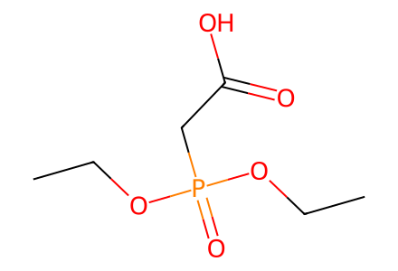
CCOP(=O)(CC(=O)O)OCC
CCOC(=O)CP(=O)(OCC)OCC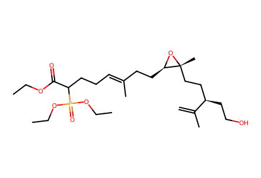
C=C(C)[C@H](CCO)CC[C@@]1(C)O[C@@H]1CC/C(C)=C/CCC(C(=O)OCC)P(=O)(OCC)OCC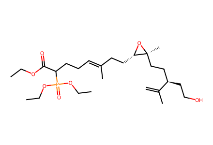
C=C(C)[C@H](CCO)CC[C@]1(C)O[C@H]1CC/C(C)=C/CCC(C(=O)OCC)P(=O)(OCC)OCC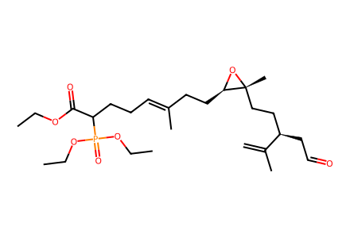
C=C(C)[C@H](CC=O)CC[C@@]1(C)O[C@@H]1CC/C(C)=C/CCC(C(=O)OCC)P(=O)(OCC)OCC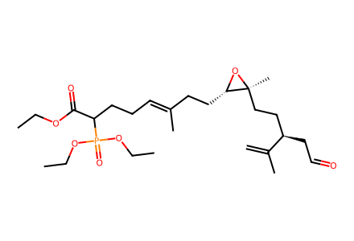
C=C(C)[C@H](CC=O)CC[C@]1(C)O[C@H]1CC/C(C)=C/CCC(C(=O)OCC)P(=O)(OCC)OCC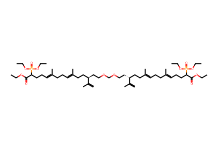
C=C(C)[C@H](CCOCOCC[C@H](CC/C(C)=C/CC/C(C)=C/CCC(C(=O)OCC)P(=O)(OCC)OCC)C(=C)C)CC/C(C)=C/CC/C(C)=C/CCC(C(=O)OCC)P(=O)(OCC)OCC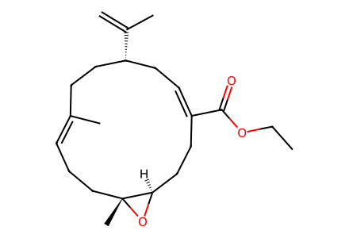
C=C(C)[C@@H]1CC=C(C(=O)OCC)CC[C@H]2O[C@]2(C)CC/C=C(\C)CC1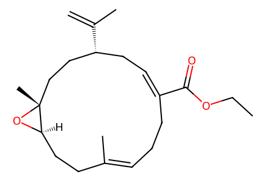
C=C(C)[C@@H]1CC=C(C(=O)OCC)CC/C=C(\C)CC[C@H]2O[C@]2(C)CC1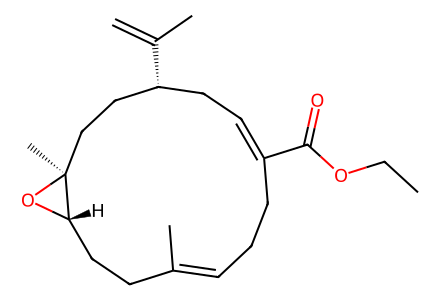
C=C(C)[C@@H]1CC=C(C(=O)OCC)CC/C=C(\C)CC[C@@H]2O[C@@]2(C)CC1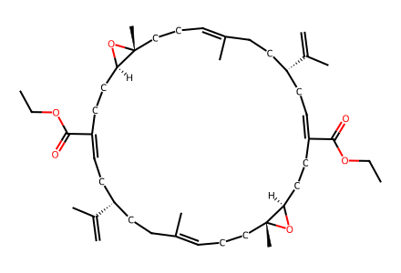
C=C(C)[C@@H]1CC=C(C(=O)OCC)CC[C@H]2O[C@]2(C)CC/C=C(\C)CC[C@H](C(=C)C)CC=C(C(=O)OCC)CC[C@H]2O[C@]2(C)CC/C=C(\C)CC1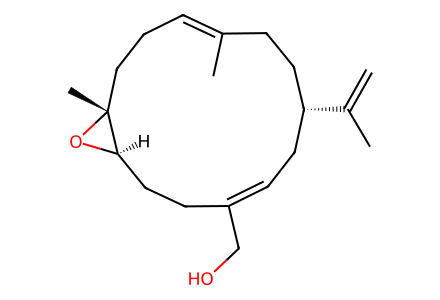
C=C(C)[C@@H]1CC=C(CO)CC[C@H]2O[C@]2(C)CC/C=C(\C)CC1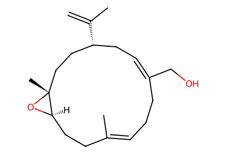
C=C(C)[C@@H]1CC=C(CO)CC/C=C(\C)CC[C@H]2O[C@]2(C)CC1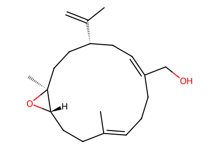
C=C(C)[C@@H]1CC=C(CO)CC/C=C(\C)CC[C@@H]2O[C@@]2(C)CC1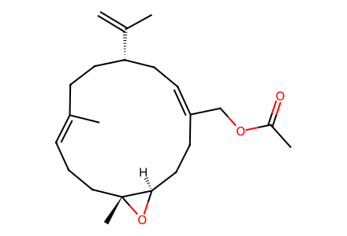
C=C(C)[C@@H]1CC=C(COC(C)=O)CC[C@H]2O[C@]2(C)CC/C=C(\C)CC1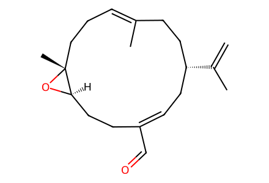
C=C(C)[C@@H]1CC=C(C=O)CC[C@H]2O[C@]2(C)CC/C=C(\C)CC1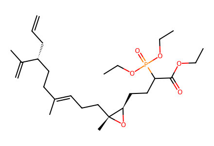
C=CC[C@H](CC/C(C)=C/CC[C@@]1(C)O[C@@H]1CCC(C(=O)OCC)P(=O)(OCC)OCC)C(=C)C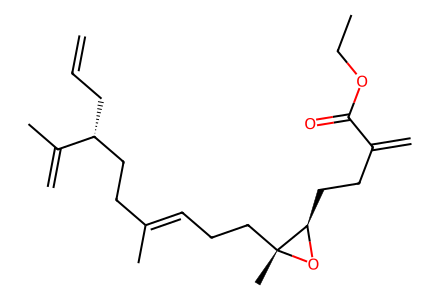
C=CC[C@H](CC/C(C)=C/CC[C@@]1(C)O[C@@H]1CCC(=C)C(=O)OCC)C(=C)CC=CC[C@H](CC[C@@]1(C)O[C@@H]1CC/C(C)=C/CCC(C(=O)OCC)P(=O)(OCC)OCC)C(=C)C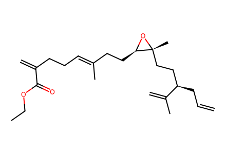
C=CC[C@H](CC[C@@]1(C)O[C@@H]1CC/C(C)=C/CCC(=C)C(=O)OCC)C(=C)C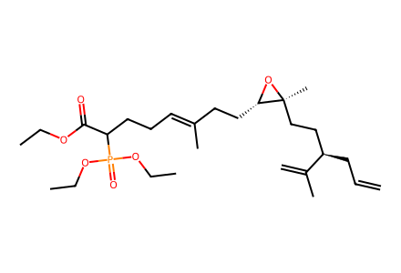
C=CC[C@H](CC[C@]1(C)O[C@H]1CC/C(C)=C/CCC(C(=O)OCC)P(=O)(OCC)OCC)C(=C)C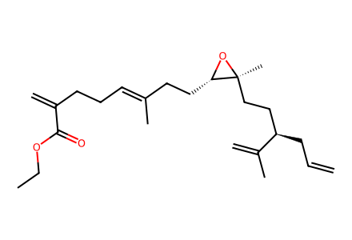
C=CC[C@H](CC[C@]1(C)O[C@H]1CC/C(C)=C/CCC(=C)C(=O)OCC)C(=C)C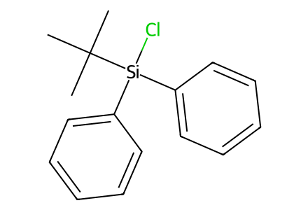
CC(C)(C)[Si](Cl)(c1ccccc1)c1ccccc1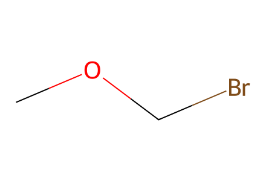
COCBr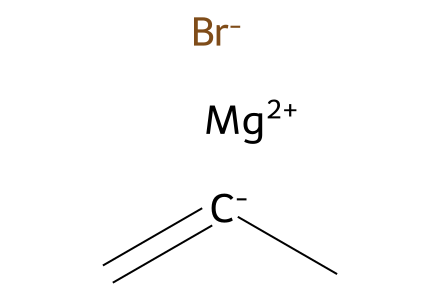
C=[C-]C.[Br-].[Mg+2]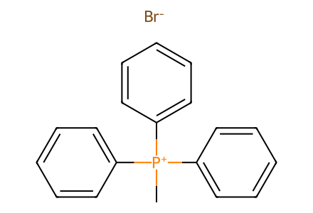
C[P+](c1ccccc1)(c1ccccc1)c1ccccc1.[Br-]
C=O
CC(=O)OC(C)=O